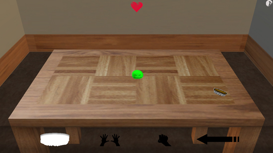

Blobbo!
Posted by Mathew on September 28th, 2008

Virtual Pet Blob Simulation
Downloads:
Team Border Patrol:
- Programming
- 3D Art
- 2D Art
- Design
Platform:
Made as my first real 3D game using XNA.
Notes:
Made for the first 48 Hour Game Jam of the 2008-2009 school year at Michigan State Univeristy, where we tied for third out of 6 possible entries. Our group consisted of 8 people ranging from Freshmen to Seniors, and we wanted to all learn something. That being said we went with a virtual pet game design. Not my most complete project, but I think it turned out pretty neat. Something I may visit in the future. Even if not my greatest result I think it's the tightest feeling game I've made yet, and if nothing else I feel as though I learned quite a bit.
Posted in Personal, Game
Archive:
Category:
Type: